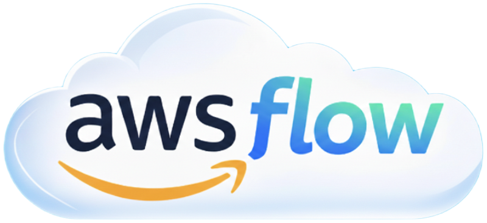

Allow VS Code Copilot,
Access AWS
Supported IDEs
VS Code
Antigravity
Windsurf
Cursor
Awsflow is a free VS Code extension that brings AWS interaction into your chat experience. Use natural language to inspect and operate your AWS resources — no SDK knowledge required.
Free to install and use with up to 20 AWS calls daily. Need unlimited access? Upgrade for $19.99.